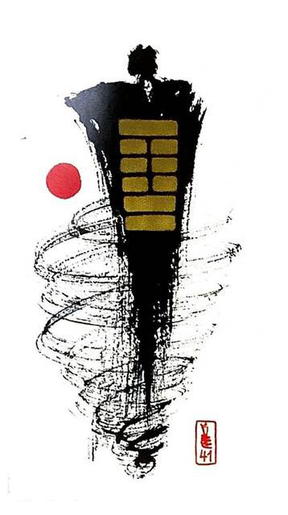

산택손
소흉괘 3
산아래에 있는 저수지의 물(산-택)은 들판을 적시기 위해 흘러간다
손해를 보고 얻는다.소용돌이에 휘말려 정신적.물질적으로 에너지가 낭비 되어지치고 힘든 상황을 표현한 그림
(-)손해보다.덜다.줄이다.감소.하락.축소.삭감하다.절약.검소.수축.희생.불리한 상황.투자.위태로운 상황
연애운
지치는 관계.애정이 식은 상태
사업운
일이 내키지 않은 마음.언제라도 떠날 준비
속마음
썸썸 탈수록 자신이 손해라고 생각하는 마음
1년 이상나는 아낌없이 주는데 상대방은 나에게 해주는것이 없다고 생각하며지치는 마음
이별 후이별한거 생각하면 에너지 빠져서 지치고 원망하는 마음
솔로연애운
새로운 이성 생길 확률 낮다
건강운
체력 방전.과로.신경계통.소화계통 주의